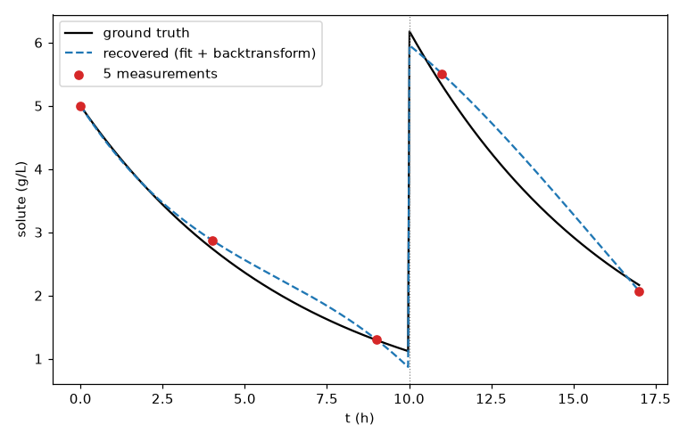

Pseudobatch splines through a jump¶
Demonstrates. Recovering a smooth concentration curve from just 5 noisy measurements straddling a discrete feed jump, checked against a known ground truth. hybrax.format only: no reaction module, no training.
The other gallery entries fit a model. This one fits a curve: it exercises the pseudobatch transform and spline fitting on their own, with nothing else in the way.
The setup¶
One species (solute), first-order decay, and one feed bolus part-way through that
jumps mass and volume together. Both phases are closed-form exponential decay at
constant volume, so the dense curve below is the exact ground truth, not a numerical
approximation of it:
SJ_K = 0.15 # 1/h, first-order decay rate
SJ_V0 = 1.0 # L
SJ_C0 = 5.0 # g/L
SJ_T_END = 17.0 # h, matches the last measurement, no unobserved tail
SJ_T_JUMP = 10.0 # h, when the bolus lands
SJ_DELTA_V_BOLUS = 0.15 # L
SJ_C_FEED = 40.0 # g/L
SJ_SAMPLE_TIMES = np.array([0.0, 4.0, 9.0, 11.0, 17.0])
def spline_jump_truth(t) -> np.ndarray:
"""Exact concentration at time(s) ``t``: closed-form on both sides of the
bolus at ``SJ_T_JUMP``. Shared with ``gallery/pseudobatch_splines.md``,
which imports this function directly rather than re-deriving the formula.
"""
t = np.asarray(t, dtype=float)
m_at_jump = SJ_C0 * SJ_V0 * np.exp(-SJ_K * SJ_T_JUMP)
v_after = SJ_V0 + SJ_DELTA_V_BOLUS
m_after = m_at_jump + SJ_DELTA_V_BOLUS * SJ_C_FEED
pre = SJ_C0 * np.exp(-SJ_K * t)
post = (m_after / v_after) * np.exp(-SJ_K * (t - SJ_T_JUMP))
return np.where(t < SJ_T_JUMP, pre, post)
import numpy as np
import hybrax.format as hxf
import sys
sys.path.insert(0, "../_data")
from generate import spline_jump_truth, SJ_T_JUMP, SJ_T_END
dense_t = np.linspace(0.0, SJ_T_END, 400)
truth = spline_jump_truth(dense_t)
collection = hxf.serialization.load_process_collection(WORK / "data.json")
process = collection.processes["run_1"]
solute = process.reactor_medium.components["solute"]
print("measurement times :", np.asarray(solute.concentration.times))
print("measured values :", np.round(np.asarray(solute.concentration.values), 3))
measurement times : [ 0. 4. 9. 11. 17.]
measured values : [5. 2.876 1.305 5.508 2.073]
Two measurements land inside 1 h of the jump on either side (9 h and 11 h), and the raw value nearly quintuples between them: that jump is the feed bolus adding mass, not the solute suddenly reappearing.
Fit and backtransform¶
from hybrax.format.splines import build_pseudobatch_transform, build_backtransform_spline
bundle = build_pseudobatch_transform(process)
process.pseudobatch_transform = bundle
back = build_backtransform_spline(process, "solute")
recovered = np.asarray(back(dense_t))
build_pseudobatch_transform removes the physical jump before fitting a spline to it;
build_backtransform_spline then wraps that fit so evaluating it returns real
concentration, not the intermediate pseudobatch_concentration. The result is a single
spline, valid on both sides of the jump, that back maps to real concentration wherever
you evaluate it.
Recovered curve versus ground truth¶

# Error only where a segment actually has data on both sides. Evaluating a
# 2-point segment beyond its own last measurement is extrapolation, not recovery.
pre = np.linspace(0.0, SJ_T_JUMP - 1.0, 200)
post = np.linspace(SJ_T_JUMP + 1.0, SJ_T_END, 200)
for label, grid in [("pre-jump [0, 9]", pre), ("post-jump [11, 17]", post)]:
rec = np.asarray(back(grid))
rel = np.abs(rec - spline_jump_truth(grid)) / spline_jump_truth(grid)
print(f"{label}: max relative error {rel.max() * 100:4.1f}% "
f"mean {rel.mean() * 100:4.1f}%")
pre-jump [0, 9]: max relative error 13.7% mean 6.0%
post-jump [11, 17]: max relative error 14.2% mean 9.6%
A real, honest fit: within roughly 14% of the true curve at its worst, both before and after the jump, from 5 points total. The dashed curve tracks the true decay’s shape closely, including its curvature, not just its two endpoints.
Why the post-jump segment is the weaker fit
The pre-jump segment has 3 measurements (0, 4, 9 h); the post-jump segment has only 2
(11, 17 h). fit_timeseries_spline needs at least 4 points per segment for its smoothing
B-spline path, so both segments here fall back to natural cubic interpolation, and 2
points pin a natural cubic down to very nearly a straight line. That line still tracks
an honestly-curved exponential decay to within ~14% here, but it is not a coincidence
that the weaker half is the 2-point one.
What made this example different¶
No reaction module, no
custom.py, no training. The pseudobatch transform and spline fitting are hybrax.format’s own, and stop being useful to demonstrate the momenthybrax.trainenters the picture.A closed-form ground truth. Every other demo dataset in this site is simulated with RK4 and compared to noisy measurements of itself. This one has an exact answer to check the fit against, because that is the whole point of the page.
5 points is not a comfortable number. One of the two segments this jump creates is forced into the 2-point, near-linear fallback. That the fit still tracks a real, curved decay to ~14% is the actual demonstration.
See also¶
Run the example yourself at ./source/_data/out/runs/gallery_pseudobatch_splines/.
The pseudobatch transform: what
build_pseudobatch_transformandbuild_backtransform_splineactually compute.Time series and splines: the segmentation and spline-fitting machinery underneath.
Gallery: fed-batch: the same transform on a full, trained fed-batch model.